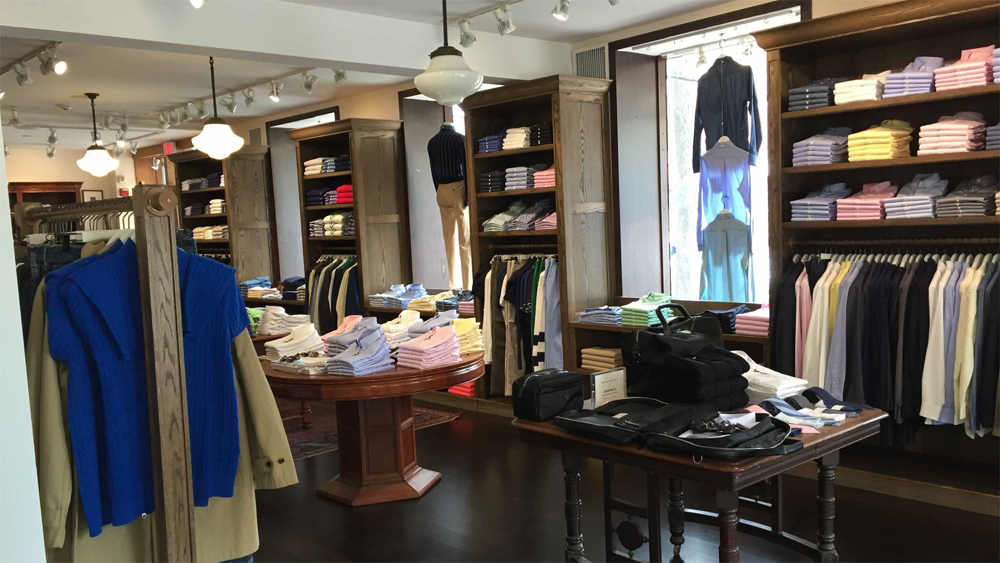
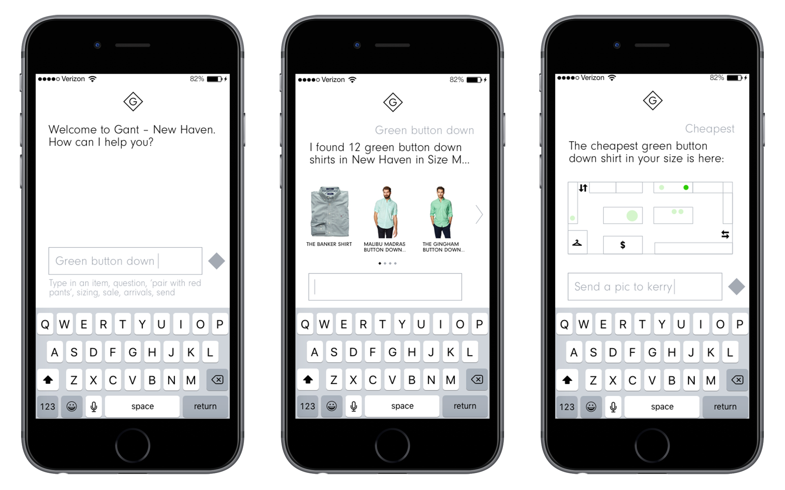
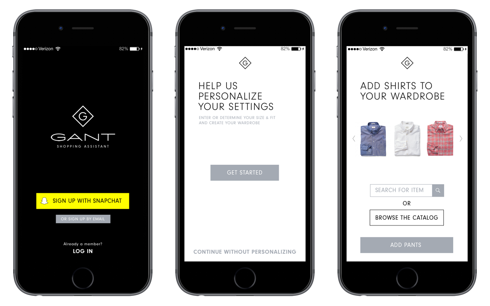
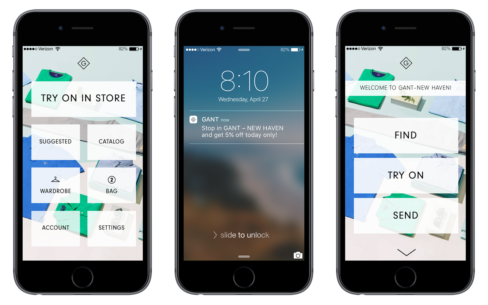
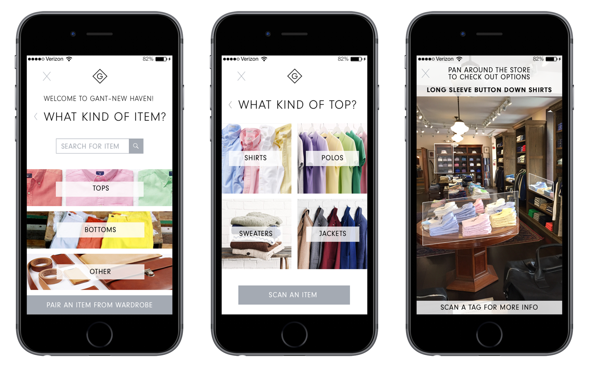
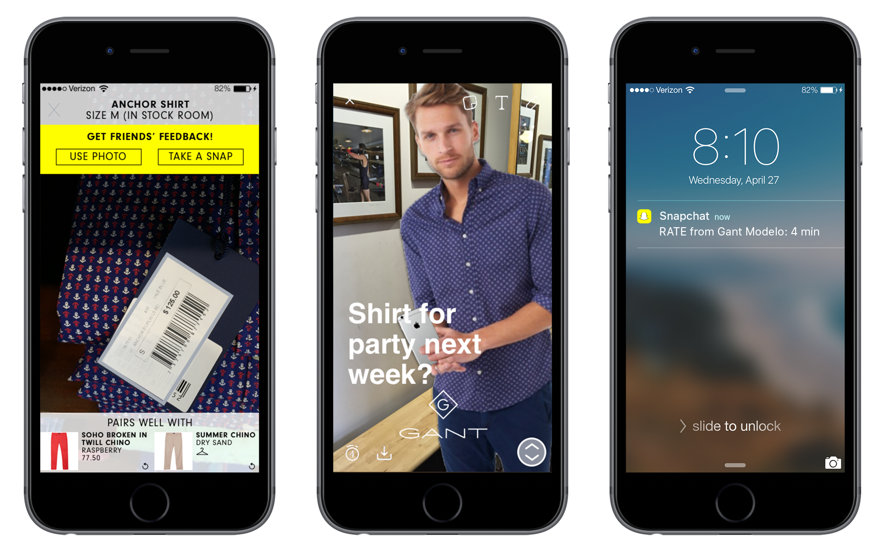
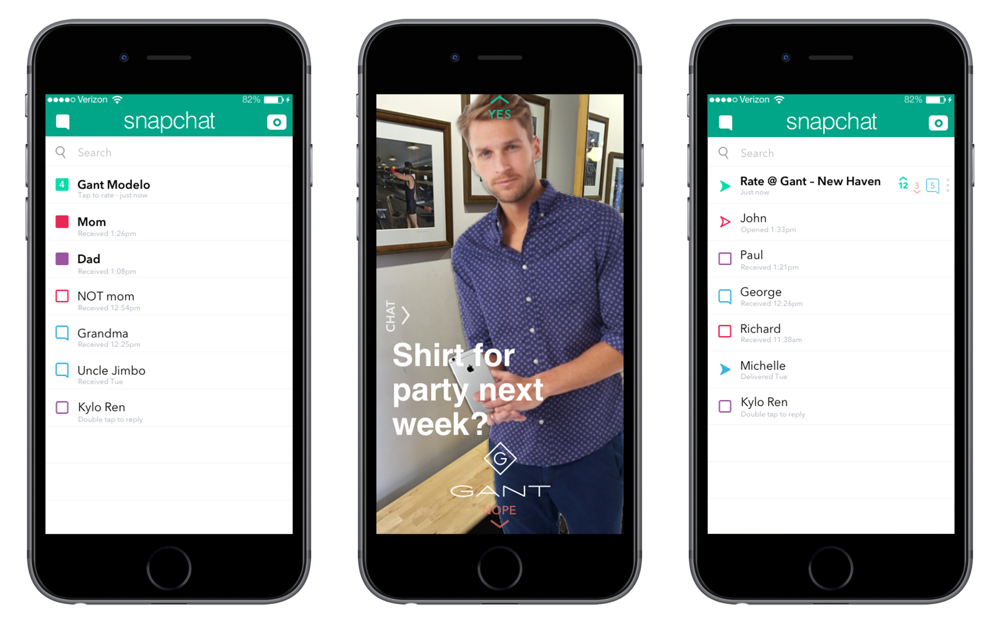
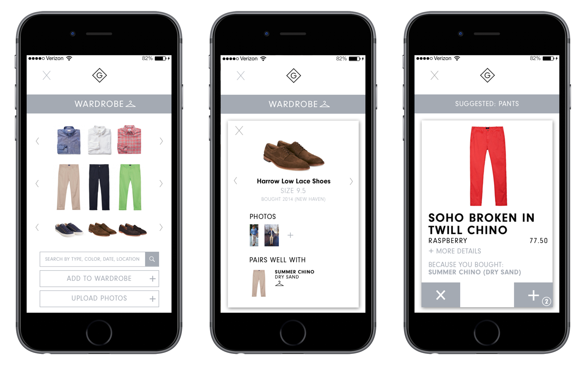

I was tasked with designing an in-store mobile app for a boutique clothing chain that would increase customer loyalty. There were two pieces of data meant to inform the design of the app. The first was that people don’t spend much time shopping in person, but find it helpful to try on clothes and pick outfits. The second was that shoppers also like to ask friends for feedback while shopping.
This was a weeklong independent assignment from April 2016.
I started by walking into Gant, a boutique clothing chain store in New Haven, known for its (expensive) Ivy League aesthetic. With declining sales, Gant recently rebranded itself to appeal to a younger audience, so it seemed like a perfect fit for this project. I had to put myself into the shoes of a young adult shopping for nice clothes (which didn’t turn out to be so difficult). A benefit of their declining sales was that nobody else was in the store, so I could take a few pictures, and more importantly, talk to the single store employee working.
The sales associate was skeptical of the general concept, noting that it would reduce his value and that people would knock over the clothing racks while using the app. While he was biased as an employee trying to keep his job, he did offer a few ideas, like push notifications when people were nearby, and an idea to sync to your calendar to remind you to buy things (which I didn’t end up using—I suspect most people don’t want clothing stores to know their schedules). He also liked some of my ideas, especially the takeout-style idea, pairing options and wardrobe, which I’ll detail in the next section.
After brainstorming many possible features, I simplified my list to the core ideas of the app:
As I began to think about how to solve this problem, I thought about the sales associate worried about technology. Could an app replace him?
So, I designed a chat-based app, a virtual in-store shopping assistant that would prompt the user with questions about what they were shopping for, and different features could be accessed with different keywords or phrases.
Problems that led me to scrapping this idea:
Though I had limited time to complete the project, I went through several iterations even after settling on my final idea (which I'll discuss next). My first iteration of the onboarding had several questions on the same page, but I found that this cluttered up the space instead of making each page one simple task. I also originally started with separate buttons for entering sizes, but transitioned to have dials that have a logical sense of order and communicate that a user just picks one in a concise manner. Similarly, the homepage went through many iterations, first with many buttons and eventually with fewer and larger buttons.
Since the chat assistant bot had some issues, I decided to design a more standard app, with a visual style that mirrors that of Gant's website following their rebrand: simple, refined, monochrome.
The app detects when the user is in a Gant store, and has a specialized and simplified in-store homepage with Find, Try on (to pick up clothes for a scheduled fitting), and Send.
The app allows users to narrow down what they’re looking for, and then shows where in the store those items can be found (and in the user’s size). Clothing items can be scanned individually for more information, including what other clothing it would pair well with.
 The Try On feature (which I kept referring to in my head as the “takeout” feature) was simple and fit into the brief. Shoppers have less time to shop, but find the trip valuable to try on clothes; the app should help make each trip to the store as efficient as possible. Users can choose certain clothing articles they want to try on (for fit, color, etc.) and set a time for the clothes to be set aside (in a reserved fitting room?), ready for the user to try on the moment they walk in the door, just as they might order takeout from a restaurant.
In trying to figure out the best way to allow users to get fashion advice from friends, I thought instantly of social, visual-centric Snapchat. But, in its current form, Snapchat wouldn’t work optimally for this app.
Because of the ephemeral nature of a Snapchat, when people receive one, there’s usually no urgency to check it right away: the content is generally something frivolous.
However, when users are in a store, they need opinions right away, not 20 minutes later, after they bought the item or left the store.
I came up with a feature that would bring Snapchat a sense of urgency while also bolstering my shopping app. Snaprate would allow users to take a picture and send it to their friends, who can respond by swiping for Yes, Nope or Chat to leave a more detailed comment. Users would be encouraged to check these Snaprates quickly because they expire in a matter of minutes.
This feature could open up more partnership opportunities between Snapchat and other companies that could integrate it into their apps, while gaining feedback on products and advertising. Snaprate could also be used for more routine choices like hairstyles or restaurants or movies.
Allowing users to log their wardrobe not only helps them keep track of their clothing in an efficient way, but suggests new items that will pair well with already-owned clothes. Clothes in a user’s wardrobe are marked with a coathanger icon.
The app offers suggestions in a Tinder-like format, based on wardrobe and buying history. The user can narrow down based on type of clothing or full outfits, and add items to their bag (or just save it to a list of clothing they like but aren’t ready to commit to yet).